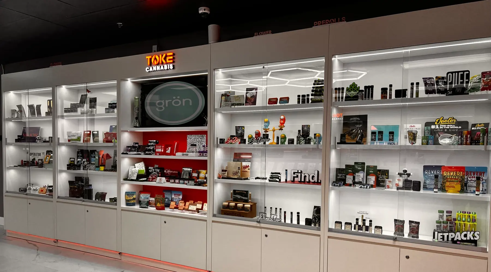
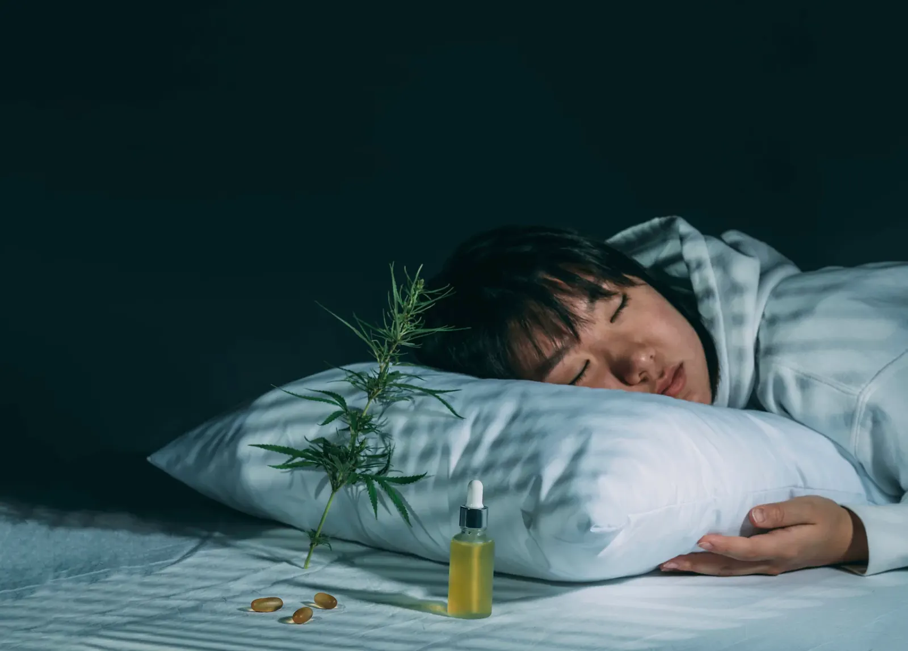
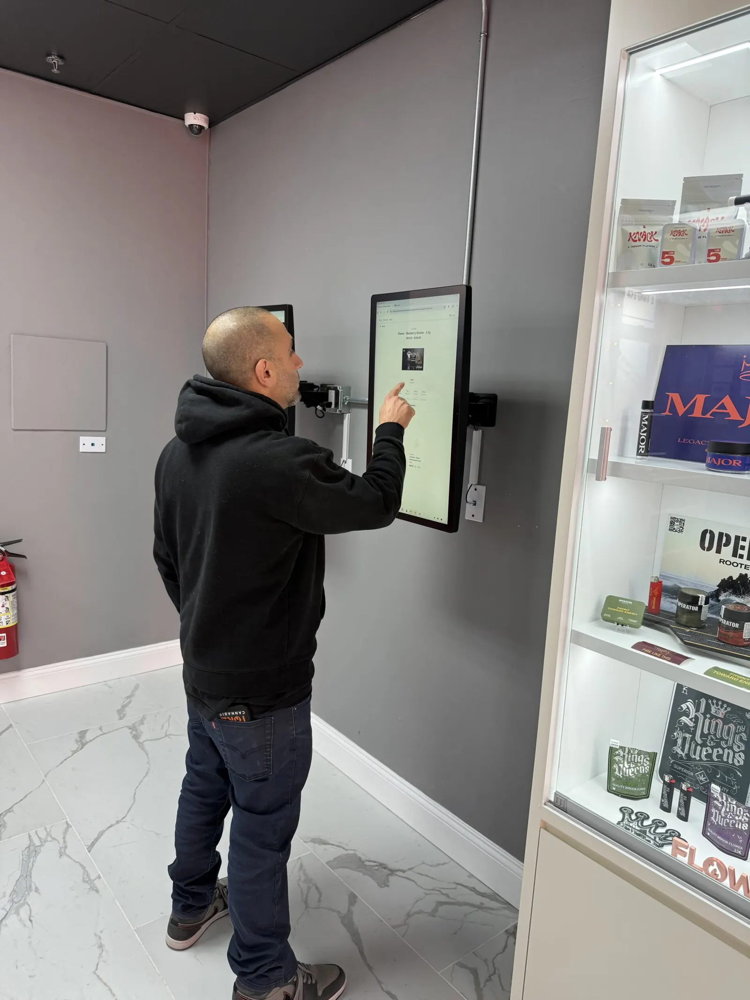

Local guides · 7 min read
Best Cannabis Drinks in Westchester
The THC drink most people walk in asking for is Ayrloom, and it is the one we would put in your hand first. It is made in New York, the dose per can is honest, and the fast acting emulsion means you feel it in 15 to 20 minutes instead of waiting out the hour an edible takes.
We already have a post on how cannabis drinks work and why they took off here. This page is the other half of that, which is what to actually buy.
Our drinks case turns over faster than almost anything else we carry, so check the live menu before you plan a party around a specific can. The doses below stay stable even when the flavors move.
What to know up front

- Ayrloom is the highest volume cannabis brand search in New York at roughly 5,400 searches a month, and Toke stocks the beverage line in both Yonkers and Spring Valley.
- Most New York THC seltzers use nano-emulsion, which breaks THC into droplets small enough to absorb quickly. Expect onset in 15 to 20 minutes rather than the 45 to 90 minutes a standard gummy takes.
- The New York State Office of Cannabis Management caps THC beverages at 10 mg per container, so the strongest legal can here is 10 mg. Session cans at 2.5 mg and 5 mg are the ones most people actually finish.
- Toke keeps drinks cold at 471 McLean Ave in Yonkers, open 10:00 AM to 10:30 PM Sunday through Thursday and 10:00 AM to 11:00 PM Friday and Saturday, ten minutes from Bronxville and Mount Vernon, and at 2 S Central Ave in Spring Valley off Route 59, open 10:00 AM to 11:00 PM daily.
- New York’s open container law is written for alcohol and its public consumption rule is written around smoking, which leaves THC drinks in a gray area outdoors. Drink them at home.
Why is Ayrloom the drink people ask for by name?

Ayrloom comes out of Beak and Skiff, the apple orchard operation in LaFayette, New York, which is why it behaves more like a beverage company than a cannabis company. The cans look like something you would buy at a bodega, and the flavors are built by people who have been making cider and hard seltzer for years.
That shows up in two things. The drink does not taste like weed: most THC beverages fight a grassy, bitter note from the emulsion, and Ayrloom hides it better than almost anything else on a New York shelf. And the dose is accurate. When a can says 5 mg, our repeat customers report it lands like 5 mg every time, which you cannot say about every producer in this state.
Ayrloom also runs ratios, pairing THC with CBD or CBG in amounts stated on the can. If you want to sip through an afternoon without losing the afternoon, look there.
The honest caveat: Ayrloom is popular enough that specific flavors sell out. If you are set on one, call first. Yonkers is 914-207-1545, Spring Valley is 845-406-3004.
What do THC seltzers actually taste like?

Like a flavored seltzer with a slightly rounder mouthfeel. The emulsion adds a faint cloudiness and a little weight, and in a badly made drink it leaves a green, oily aftertaste on the finish.
Citrus and berry flavors hide the cannabis note best. Herbal and botanical profiles amplify it, so if you are new to the category, buy the one that sounds like a summer drink rather than the one that sounds sophisticated.
Serve them cold and upright. A warm THC seltzer is genuinely unpleasant in a way a warm beer is not, and the emulsion separates as it sits.
Which dose should your first can be?

Start at 2.5 mg if you have never had a cannabis drink. One can, sipped over twenty minutes, is enough to notice. Plenty of people who think they want 10 mg find 2.5 mg is the dose they keep buying, the pattern in our post on microdosing cannabis.
Five milligrams is the workhorse. It is the dose most of our regulars buy for a Friday, and roughly where a THC drink starts to feel like it is replacing a couple of beers rather than sitting alongside them.
Ten milligrams is a real dose. It lasts three to five hours and it is the wrong choice for a first time. Nobody should be driving after any of these.
Finish one can, wait thirty minutes, then decide. Drinks come on faster than edibles, which makes it easier to stack them without meaning to.
Drinks or gummies: which should you buy?

Drinks win on speed and on how they fit socially. A can in your hand at a cookout reads as a seltzer, and the whole thing ends sooner.
Gummies win on price per milligram, on portability, and on precision. You can cut a gummy in half. You cannot cut a can in half without it going flat. Our guide to the best gummies in Westchester covers dosing in detail, and the edibles versus smoking comparison covers onset timing.
A THC seltzer is not a health product and we are never going to pitch it as one. What we hear from customers who switched is that they like how the next morning goes.
What else is worth drinking besides Ayrloom?

The New York beverage shelf is still young. Lines come and go, and the ones that stick fall into four shapes.
Session seltzers at 2.5 mg are for daytime and for people who want more than one. Standard 5 mg cans are the default. Ten milligram cans are the high dose end of what New York allows. Shots and liquid concentrates let you dose your own drink, which is the most flexible option and the easiest to overdo, because pouring is less precise than a sealed can.
We are not listing every brand in the cooler, because that list would be wrong within a month. Walk in and ask. Our budtenders will tell you which of this week’s drinks they would buy themselves, which is how we work the counter.
Can you drink a THC seltzer in public in New York?

Keep it at home. New York’s cannabis possession and consumption law was written around smoking and vaping, and it does not cleanly address a sealed can of seltzer in a park. The open container rules cover alcohol, which a THC drink is not.
That gap is not permission. A can in public invites a conversation with a police officer nobody wants, and the rules on driving are not gray at all. Our guide to New York cannabis laws in 2026 covers what is settled and what is not.
Who should skip cannabis drinks?

Anyone who needs a precise dose. A can is sealed at one number, so if your dose is 3 mg you are either wasting most of a can or drinking more than you wanted.
Anyone who drinks fast. The speed that makes these good socially is what gets people to three cans in an hour. If you finish a beer in four minutes, buy 2.5 mg cans and slow down.
Frequently asked questions

What is Ayrloom? Ayrloom is a New York cannabis brand making THC beverages and gummies, produced by the Beak and Skiff apple orchard operation in LaFayette, New York. It is the most searched cannabis brand in the state at roughly 5,400 searches a month. Toke carries it in Yonkers and Spring Valley.
Where can I buy Ayrloom near me in Westchester? At Toke, 471 McLean Ave in Yonkers, open until 10:30 PM Sunday through Thursday and 11:00 PM Friday and Saturday, with delivery to Bronxville, Scarsdale, Mount Vernon, New Rochelle, and the rest of lower Westchester. Rockland orders run out of 2 S Central Ave in Spring Valley. Call ahead if you want a specific flavor.
How long does a THC drink take to kick in? Usually 15 to 20 minutes, because most New York beverages use nano-emulsion to speed absorption. That is much faster than a standard gummy, which can take 45 to 90 minutes. Wait a full thirty minutes after finishing a can before you open another one.
How strong is a 5 mg cannabis drink? Five milligrams is a moderate dose that most people compare to a couple of drinks, lasting roughly two to four hours. It is the most popular dose we sell. If you have never had a cannabis beverage, start at 2.5 mg instead.
Do cannabis drinks taste like weed? The good ones do not. Well made New York seltzers taste like flavored sparkling water with a slightly rounder mouthfeel. Older or cheaper products carry a green, oily note on the finish. Citrus and berry flavors hide it best.
Can I mix a THC drink with alcohol? We would not. Combining them makes both harder to judge, and people who do it report a rougher time than either alone. Pick one for the night.
Where to buy cannabis drinks in Westchester and Rockland
To see what is cold right now, open the Yonkers menu or the Spring Valley menu and filter to beverages. Yonkers is at 471 McLean Ave, open until 10:30 PM (11:00 PM Friday and Saturday), a short run from Bronxville, Tuckahoe, and Central Park Avenue. Spring Valley is at 2 S Central Ave, open until 11:00 PM, the closer stop from Nanuet, Monsey, and Nyack.
Both stores deliver across Westchester and Rockland with a real ETA and a text from the driver. The delivery minimum is $75. Delivery is free on orders of $75 or more. Drinks are heavy and stack toward that threshold fast. Any store you order from should appear in the state’s licensed dispensary verification tool. You accept the order in person with photo ID, and payment at the door is cash or debit.
Still choosing between a drink and a gummy? The best cannabis products in Westchester roundup lays out every category. Or call Yonkers at 914-207-1545 or Spring Valley at 845-406-3004 and somebody will tell you whether the can you are after is in the cooler today.
Keep reading
More from the blog

Cannabis for Sleep, Stress, and Recovery: What Actually Works
Cannabis has officially entered its “wellness era.” It’s in gummies, drinks, tinctures, and bedtime routines everywhere often positioned as a natural…

How to Shop at Toke Cannabis (and Why We Don’t Carry Everything)
If you’ve ever walked into Toke Cannabis in Yonkers or Spring Valley, New York and thought, “Wait… why don’t you guys have every brand I’ve ever seen…

Why Shopping Local Matters in New York’s Cannabis Industry
If you’ve ever been standing in line at Toke Cannabis in Yonkers or Spring Valley, New York and asked:
Two stores · open 7 days
Order tonight, pick it up in minutes
Order online for in-store pickup, curbside pickup, or delivery across Westchester and Rockland. Free delivery on orders of $75 or more.